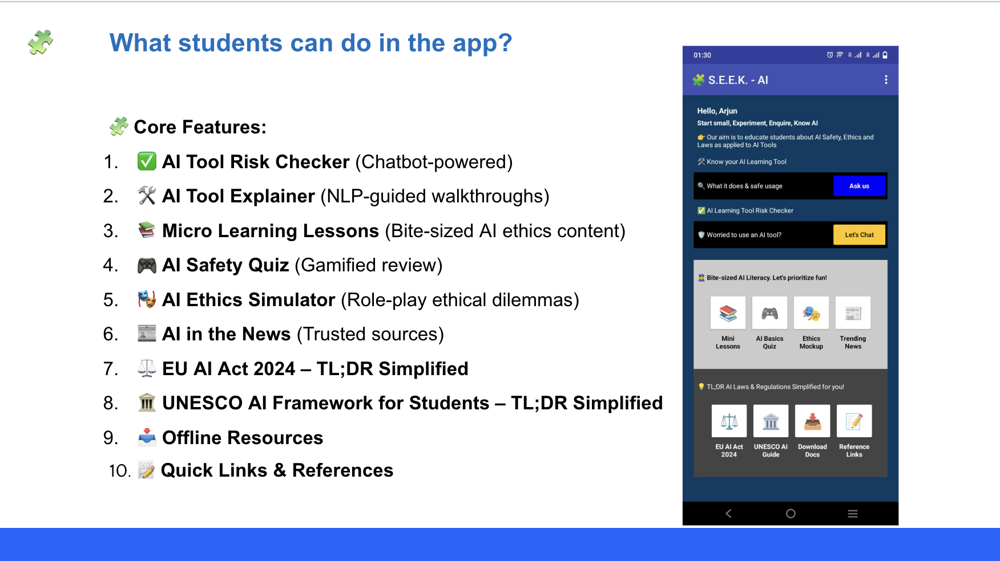

S.E.E.K AI
Video
About
My inspiration
SEEK AI stands for Start Small, Experiment, Enquire and Know AI. I built it as a student-focused AI literacy platform for high school students who are already using AI tools, but may not fully understand how they work, what risks they carry, or how to use them responsibly.
Why I Built It
Students use AI for studying, writing, coding, and research, but are rarely taught to question how these tools work or what risks they carry:
- Is this AI tool fair?
- Does it collect my data?
- Could it give biased answers?
- Am I allowed to use it for this task?
- What does responsible AI use actually look like?
SEEK AI answers those questions through a simple, interactive experience designed for students rather than legal or corporate audiences.
Building Around Real Frameworks
SEEK AI is grounded in the EU AI Act 2024 and UNESCO's AI guidance, not generic “AI tips.” It translates large governance frameworks into clear explanations, examples, short lessons, and practical checks.
The goal is to make responsible-AI literacy accessible beyond specialist programmes and usable in an ordinary school setting.
Core Features
Core tools include an AI Tool Risk Checker, AI Tool Explainer, micro-learning lessons, quizzes, an AI Ethics Simulator, trusted news, offline resources, and simplified EU and UNESCO guidance.
The lessons are intentionally short and active, helping students explore privacy, bias, transparency, safety, and fairness without feeling overwhelmed.

Presenting the Work
I presented the idea behind SEEK AI at Google Ireland's Foundry AI in Community event, speaking as a panelist to 100+ community leaders about responsible AI adoption in education.
What SEEK AI Aims To Do
SEEK AI combines regulation, ethics, and student-friendly learning so young people can understand AI tools, question their risks, and use them with greater confidence and care.
Recognition